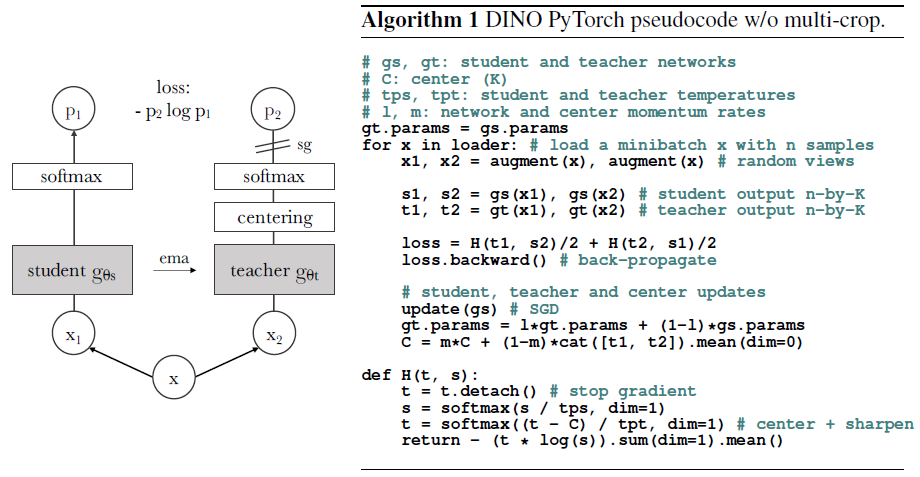

DINO: Emerging Properties in Self-Supervised Vision Transformers

Introduction
In 2021, Facebook AI Research (now Meta AI) introduced DINO (Self-Distillation with No Labels), a groundbreaking approach to self-supervised learning in computer vision. Published in the paper “Emerging Properties in Self-Supervised Vision Transformers” by Mathilde Caron and colleagues, DINO represented a significant leap forward in learning visual representations without relying on labeled data. This article explores the key aspects of the original DINO research, its methodology, and its implications for computer vision.
The Challenge of Self-Supervised Learning
Traditionally, computer vision models have relied heavily on supervised learning using massive labeled datasets like ImageNet. However, creating such datasets requires enormous human effort for annotation. Self-supervised learning aims to overcome this limitation by teaching models to learn meaningful representations from unlabeled images, which are abundantly available.
Several approaches to self-supervised learning had been proposed before DINO, including:
- Contrastive learning (SimCLR, MoCo)
- Clustering-based methods (SwAV, DeepCluster)
- Predictive methods (predicting rotations, solving jigsaw puzzles)
DINO introduced a novel approach that combined elements of knowledge distillation and self-supervision to produce surprisingly effective visual representations.
DINO’s Core Methodology
DINO’s key innovation was adapting the concept of knowledge distillation to a self-supervised setting. Traditional knowledge distillation involves a teacher model transferring knowledge to a student model, but DINO cleverly applies this concept without requiring separate pre-trained teacher models.
Self-Distillation Framework
In DINO:
- Teacher and Student Networks: Both networks share the same architecture but have different parameters.
- Parameter Updates:
- The student network is updated through standard backpropagation
- The teacher is updated as an exponential moving average (EMA) of the student’s parameters
This creates a bootstrapping effect where the teacher continually provides slightly better targets for the student to learn from.
Multi-crop Training Strategy
DINO employs a sophisticated data augmentation approach:
- Global Views: Two larger crops of an image (covering significant portions)
- Local Views: Several smaller crops that focus on details
The student network processes all views (global and local), while the teacher only processes the global views. The student network is trained to predict the teacher’s output for the global views from the local views, forcing it to understand both global context and local details.
Self-Supervision Objective
The training objective minimizes the cross-entropy between the teacher’s output distribution for global views and the student’s output distribution for all views (both global and local). This encourages consistency across different scales and regions of the image.
Collapse Prevention
A major challenge in self-supervised learning is representation collapse—where the model outputs the same representation regardless of input. DINO prevents this through:
- Centering: Subtracting a running average of the network’s output from the current output
- Sharpening: Using a temperature parameter in the softmax that gradually decreases throughout training
These techniques ensure the model learns diverse and meaningful features.
Vision Transformer Architecture
While DINO can be applied to various neural network architectures, the paper demonstrated particularly impressive results using Vision Transformers (ViT). The combination of DINO with ViT offered several advantages:
- Patch-based processing: ViT divides images into patches, which aligns well with DINO’s local-global view approach
- Self-attention mechanism: Enables capturing long-range dependencies in images
- Scalability: The architecture scales effectively with more data and parameters
DINO was implemented with various sizes of ViT models: - ViT-S: Small (22M parameters) - ViT-B: Base (86M parameters)
Emergent Properties
The most surprising aspect of DINO was the emergence of properties that weren’t explicitly trained for:
Unsupervised Segmentation
Remarkably, the self-attention maps from DINO-trained Vision Transformers naturally highlighted object boundaries in images. Without any segmentation supervision, the model learned to focus attention on semantically meaningful regions. This surprised the research community and suggested that the model had developed a deeper understanding of visual structures than previous self-supervised approaches.
Local Feature Quality
DINO produced local features (from patch tokens) that proved extremely effective for tasks requiring spatial understanding, like semantic segmentation. The features exhibited strong semantic coherence across spatial regions.
Nearest Neighbor Performance
Using DINO features with simple k-nearest neighbor classifiers achieved impressive accuracy on ImageNet classification, demonstrating the quality of the learned representations.
Training Details
The original DINO paper described several important implementation details:
Data Augmentation
The augmentation pipeline included: - Random resized cropping - Horizontal flipping - Color jittering - Gaussian blur - Solarization (for some views)
Optimization
- Optimizer: AdamW with weight decay
- Learning rate: Cosine schedule with linear warmup
- Batch size: 1024 images
Architectural Choices
- Projection head: 3-layer MLP with bottleneck structure
- CLS token: Used as global image representation
- Positional embeddings: Standard learnable embeddings
Results and Impact
DINO achieved remarkable results on several benchmarks:
ImageNet Classification
- 80.1% top-1 accuracy with k-NN classification using ViT-B
- Competitive with supervised methods and superior to previous self-supervised approaches
Downstream Tasks
DINO features transferred successfully to: - Object detection - Semantic segmentation - Video instance segmentation
Robustness
The features showed strong robustness to distribution shifts and generalized well to out-of-distribution data.
Comparison with Previous Methods
DINO differed from earlier self-supervised approaches in several key ways:
Versus Contrastive Learning
- No need for large negative sample sets
- No dependence on intricate data augmentation strategies
- More stable training dynamics
Versus Clustering-Based Methods
- No explicit clustering objective
- More straightforward implementation
- Better scaling properties with model size
Conclusion
The original DINO research represented a significant step forward in self-supervised visual representation learning. By combining knowledge distillation techniques with self-supervision and leveraging the Vision Transformer architecture, DINO produced features with remarkable properties for a wide range of computer vision tasks.
The emergence of semantic features and unsupervised segmentation abilities demonstrated that well-designed self-supervised methods could lead to models that understand visual concepts in ways previously thought to require explicit supervision. DINO laid the groundwork for subsequent advances in this field, including its successor DINOv2, and helped establish self-supervised learning as a powerful paradigm for computer vision.
The success of DINO highlighted the potential for self-supervised learning to reduce reliance on large labeled datasets and pointed toward a future where visual foundation models could be developed primarily through self-supervision – mirroring similar developments in natural language processing with large language models.